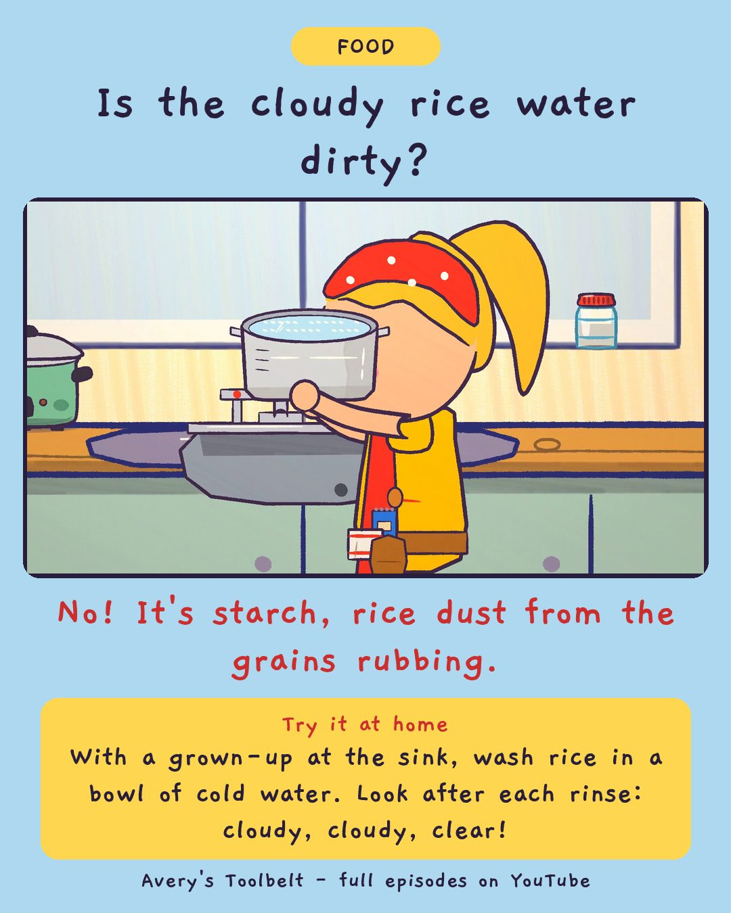

The Water Runs ClearWhy Do We Wash Rice?
水變清了

Is the cloudy rice water dirty?
No! It's starch, rice dust from the grains rubbing.
Try it at home
With a grown-up at the sink, wash rice in a bowl of cold water. Look after each rinse: cloudy, cloudy, clear!
Free printable coloring page (PDF) Watch the full episode on YouTubeAbout this episode, for grown-ups
On Wednesday, Kai's mom arrives carrying her family's old rice cooker - older than Kai - and Kai shows Avery how his family washes rice: cold water, swirl, tip it out, again, until the water runs clear. Avery holds the pot up to the window every time to check.
Then she asks why, and gets two different answers. Kai says it's so the rice isn't sticky. Mom says it's to get the dust off. Nobody is sure. And the glass of rinse water on the windowsill is about to show Avery something.
What children find out: the cloudy water is not dirt. It is starch dust, made when the grains rub against each other - and you can watch it go from milky to clear.
For grown-ups: an episode about the difference between something you checked and something everybody says - and about a friend who doesn't know why his family does a thing, and a girl who doesn't know why hers does either.